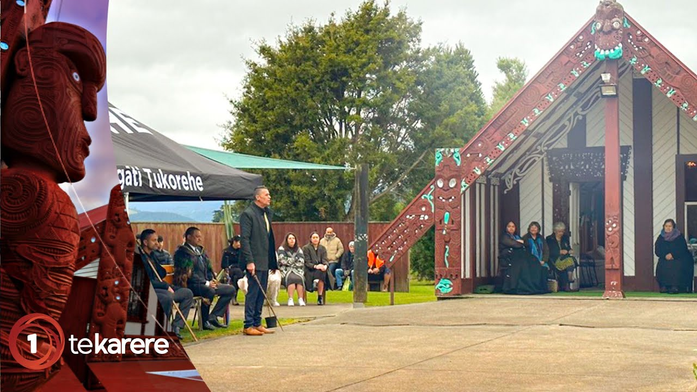

Personal Details
Family - Whanaungatanga | Tribal Affiliation - Iwi/Hapu | Hobbies
Currently living in Tauranga, my wife Alicia and I moved from Palmerston North in October 2009. With our children (4 at the time), the change in scenery was a great opportunity to take in, and make the most of what the Bay of Plenty, Tauranga had to offer. Through the time we have spent here raising our children and working, weve learned important lessons and gained experience that better equipped us for the challenges ahead. My wife took a path in accounting and achieved her degree through toi oho mai, similarly, I studied at toi oho mai to pursue my own degree in web development IT. Fast forward to today and our family has grown by one, my wife manages her sales team, our older children have secured roles in their own chosen fields and I am currently interning at datacom. "He whanau kotahi tatou" - We are one family

- Tukorehe -
Ko Ngati Tukorehe toku Iwi, ko Ngati Tuwharetoa toku Hapu, ko Ngati Tukorehe toku marae
Ko Tararua te maunga
Ko Ohau te awa
Ko Tainui te waka.
Ko Joshua Manuhiriri Wehipeihana toku ingoa
Ko Kevin Wehipeihana toku papa
Ko Eva Houghton toku mama
No Tauranga oku kainga noho.
Tihei mauri ora!
Ngati Tukorehe is my Iwi, Ngati Tuwharetoa is my Hapu
Tararua is my mountain
Ohua is my river
Tainui is my waka
I am Joshua Manuhiri Wehipeihana
My Father is Kevin Wehipeihana
My Mother is Eva Houghton
I live in Tauranga
Breathe the breath of life!
Professional Statement
As a software development graduate, I thrive in the dynamic realm of technology. My internship at Datacom reignited my passion for learning and propelled me to embrace emerging trends. Currently, I'm conquering the AWS Cloud Solutions Architect certification, diving into Terraform and Azure, and exploring the frontiers of AI projects. This constant evolution equips me to solve challenges with innovative solutions, ensuring I stay ahead of the curve.
Goals
The following are some of my short term and long term goals for the future
- Achieve AWS Cloud Solutions Architect certification: AWS Cloud Solutions Architect certification isn't just a credential; it's a passport to a world of innovative possibilities. I'm dedicating time, resources, and laser focus to ace this exam. By delving into practice tests, attending workshops, and immersing myself in hands-on scenarios, I'll transform theoretical knowledge into practical problem-solving prowess. This certification will be my key to unlocking exciting opportunities in the cloud.
- Terraforming the Cloud: Beyond the Basics: While I'm comfortable with Terraform, I crave mastery. I'm diving deeper into complex modules, automating infrastructure deployments, and tackling intricate configurations. Online learning platforms and hands-on projects will be my training grounds, where I'll sculpt the perfect cloud infrastructure, brick by virtual brick
- Azure Odyssey: Embracing the Unknown: The tech landscape demands versatility, and Azure is my next frontier. Introductory courses will be my launchpad, giving me a solid foundation. Then, I'll embark on personal projects, exploring areas like serverless computing and containerization. Mastering Azure won't just broaden my skillset; it will equip me to tackle any cloud challenge with confidence.
- AI Horizon: A Glimpse into the Future: Artificial intelligence is the future, and I'm eager to take my first steps. Introductory courses will unlock the basics of machine learning and computer vision. Then, personal projects will be my playground, where I'll experiment with building intelligent applications. This early exploration will be the foundation for a lifelong journey into the fascinating world of AI.
These are just the first peaks I'm scaling on my skill mastery journey. With dedication, hands-on practice, and a thirst for knowledge, I'm confident I can conquer the tech Everest, one skill at a time. My future is in the cloud, and I'm building the perfect toolkit to navigate it with mastery and innovation. - Expanding My Horizons, One Connection at a Time: The tech world thrives on collaboration, and I'm ready to build my network. Conferences, workshops, and online communities become platforms not just to learn, but to connect with industry professionals. By actively engaging, sharing my knowledge, and learning from others, I can forge relationships that will open doors to new opportunities and broaden my perspective.
- Giving Back, Leveling Up: Open-source projects are the beating heart of the tech community, and I want to be a part of it. By contributing my skills to projects related to my interests, like AWS or Terraform, I can not only give back to the community but also gain valuable hands-on experience. This will not only enhance my technical expertise but also demonstrate my commitment to continuous learning and collaboration.
Leadership and Communication
- Stepping Up at Datacom: While my internship gave me invaluable insights, I'm hungry to take the next step. I see small projects within my team as the perfect springboard. By volunteering to lead, I can showcase my ability to think critically, organize tasks effectively, and motivate others to achieve goals. This will not only demonstrate my leadership potential but also prove my commitment to contributing meaningfully.
- Sharing My Journey, Loud and Clear: Presentations, whether internal or external, are more than just sharing knowledge – they're building bridges. By confidently presenting my learnings and experiences, I'll not only hone my communication skills but also connect with colleagues and industry professionals. These opportunities to tell my story will build my personal brand as someone eager to learn, share, and collaborate.
- Knowledge is Power, Sharing is Empowering: The tech community thrives on knowledge exchange, and I want to be a part of that. Starting a blog or writing technical articles will allow me to share my insights with a wider audience, helping others learn and grow alongside me. This not only strengthens my communication skills but also establishes me as a valuable resource and builds a network of like-minded individuals.
These are just the first steps on my journey towards becoming a leader and communicator who inspires others. I'm confident that by actively taking initiative, embracing opportunities to present, and sharing my knowledge, I can pave the way for a fulfilling career in the ever-evolving world of technology.
Skill Mastery
Professional Development
Specialization
- Finding My Niche: A Symphony of Skills and Opportunities: The vastness of cloud computing and AI is both exciting and daunting. But instead of simply wandering, I'm driven to carve my own path. I'm currently exploring areas like cloud security, serverless architectures, and data science, searching for that perfect intersection where my passion sparks and market demand roars. This search isn't just about finding a job; it's about finding my purpose, the unique contribution I can make to the tech landscape.
- Mastering the Craft: From Apprentice to Grandmaster: Once I've found my niche, I won't stop at basic proficiency. Advanced certifications and specialized training will become my weapons of choice, honing my skills to a razor's edge. Whether it's delving deeper into secure cloud infrastructure or unlocking the secrets of advanced data analysis, I'll devour every bit of knowledge, transforming myself into a recognized expert in my chosen field.
- Sharing My Symphony: From Whisper to Crescendo: Expertise without knowledge exchange is merely a silent melody. I'm committed to sharing my discoveries, insights, and challenges with the world. Industry publications will be my stage, where I can pen articles that resonate with fellow tech enthusiasts. Major conferences will become my podium, where I can share my expertise and spark meaningful discussions. Becoming a thought leader isn't about ego; it's about building a community of like-minded individuals, paving the way for progress together.
This journey of specialization isn't just about acquiring skills and recognition; it's about finding my voice in the symphony of technology. By aligning my passion with market needs, honing my expertise, and sharing my knowledge, I'm ready to compose a unique melody of innovation that resonates with the world. And who knows, maybe one day, I'll even conduct the orchestra of the future.